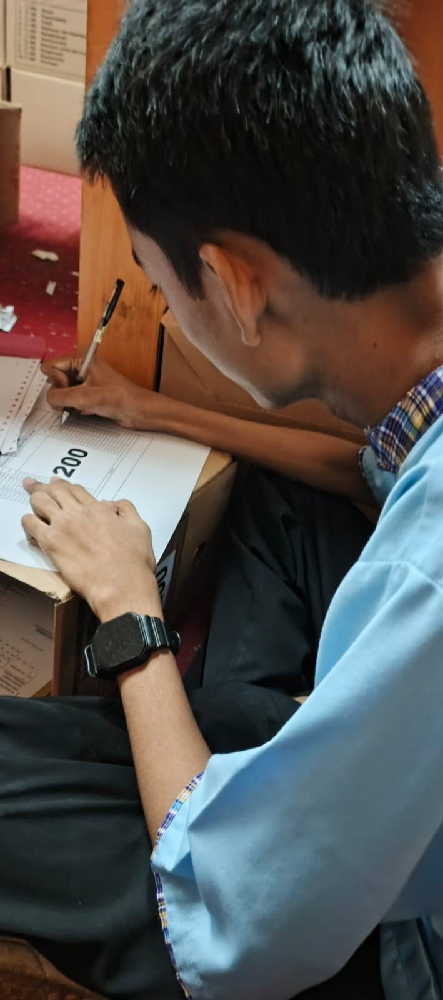

-

BPHTB (Bea Perolehan Hak atas Tanah dan Bangunan) adalah sebagai pajak atas peralihan hak kepemilikan tanah atau bangunan yang menjadi sumber penerimaan daerah untuk pembangunan, sekaligus syarat administratif penting untuk mengesahkan transaksi properti seperti jual beli, waris, hibah, tukar-menukar, hingga lelang, agar proses balik nama sertifikat dapat diselesaikan.
Adapun langkah – langkah yang dilakukan proses pendataan arsip BPHTB
yaitu:
1. Pengumpulan Arsip
Menulusuri seluruh rak Arsip BPHTB yang tersimpan.
Mengambil Arsip BPHTB yang masih tercecer dan
mengumpulkannya ke satu meja khusus pendataan.
2. Pemeriksaan Isi Arsip
Membuka satu per satu berkas Arsip BPHTB. Memeriksa
kelengkapan dokumen di dalamnya (SPPT, bukti setor, berkas
pendukung, dsb.).
3. Pengisian Daftar Berkas Arsip
Mengisi tabel pendataan Arsip yang mencakup :
Jenis Arsip : BPHTB
Tahun Arsip : Tahun tercantum pada dokumen
Nomor Box : Diisi jika arsip telah berada dalam box (Jika belum,
dikosongkan)
Jumlah Berkas : Jumlah berkas dalam satu kelompok
Kondisi Arsip : Baik/Rusak ringan/Rusak berat
Catatan : Arsip yang rusak berat dipisahkan untuk diperbaiki.
4. Pemberian Nomor Urut Sementara
Setiap Arsip diberi nomor urut berdasarkan hasil pendataan.
Nomor urut sementara ditempel menggunakan stiker kecil pada
berkas.